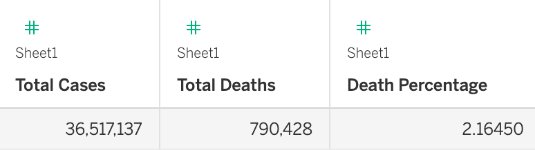
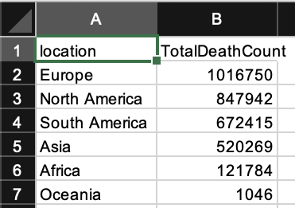
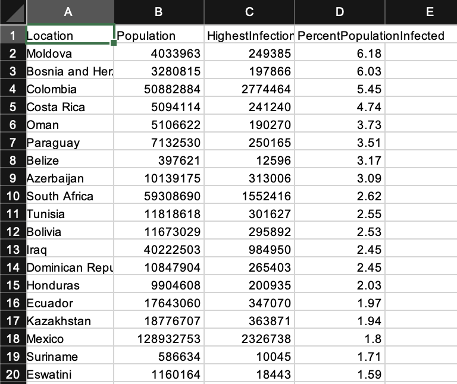
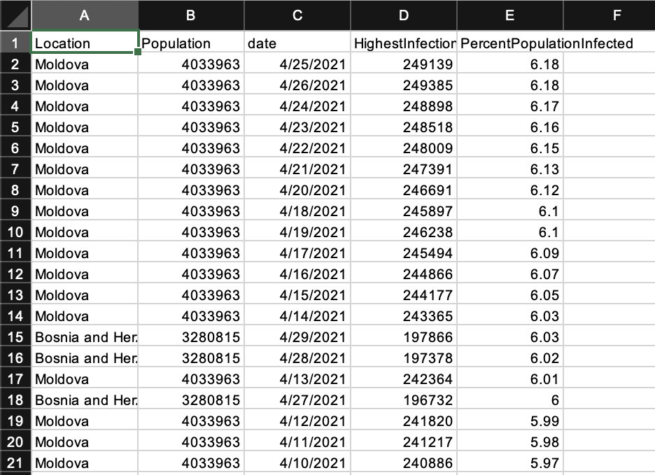
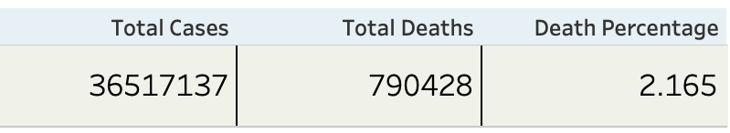
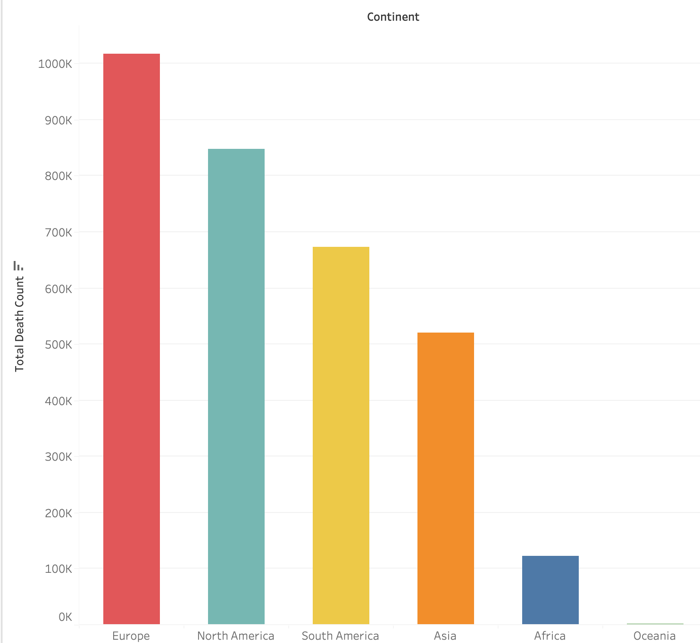
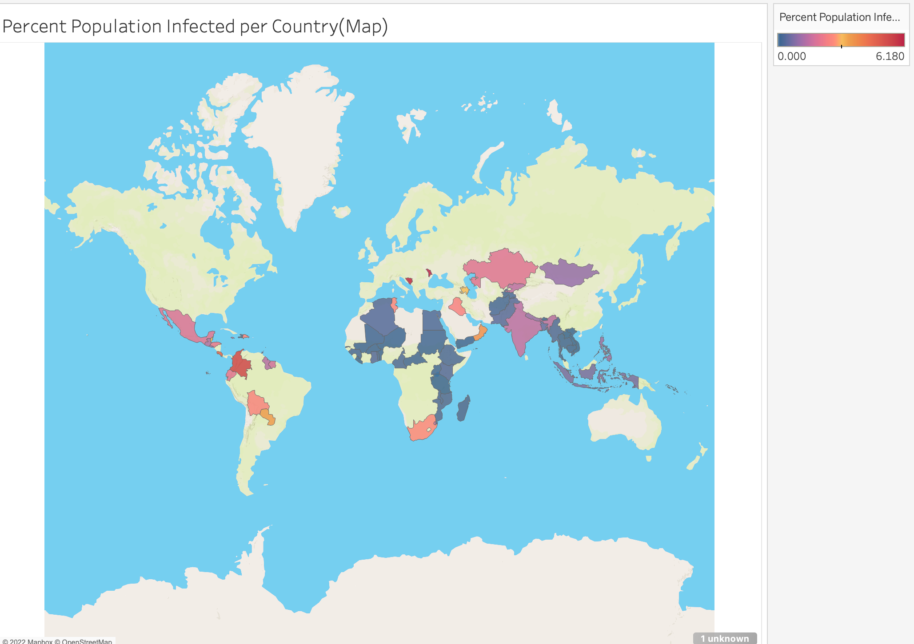
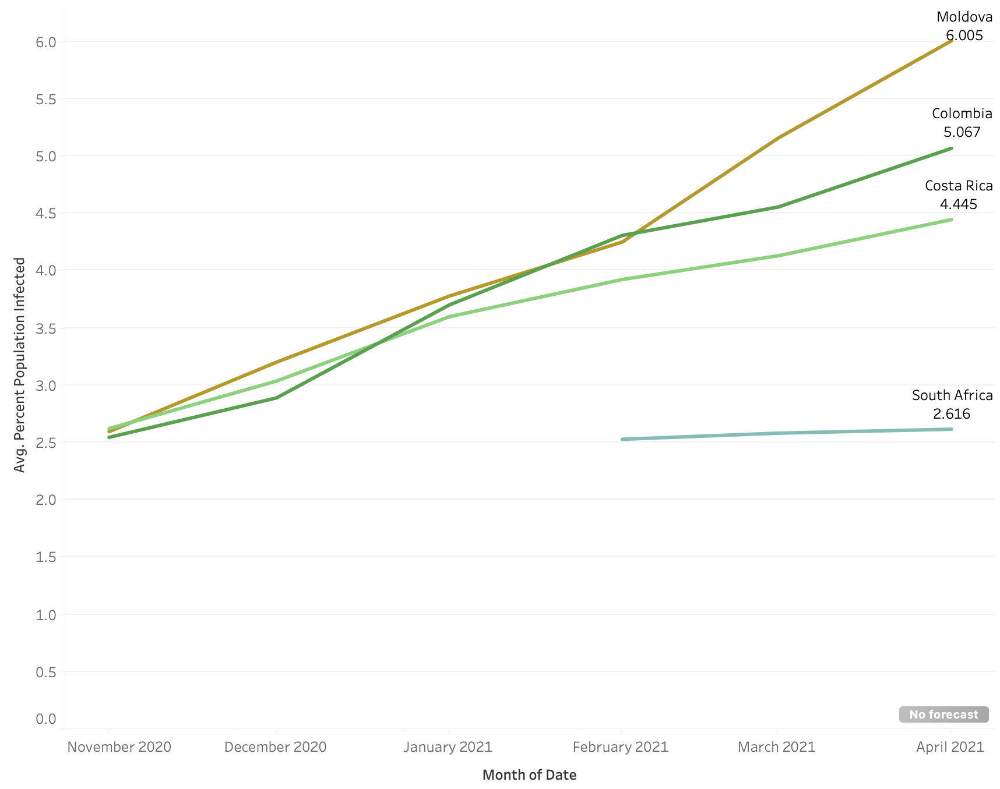

Covid Project-Tableau
In this project we're continuing the project we started first in SQL where we used 2 different datasets for our query to develop tables and undercover some of the key points in our data. There are 4 different datasets we are using in this one, this is also a selected portion of the real data from around the world because we're using the same data we inserted into SQL in the previous part of the project.
Dataset

In table 1 we're grabbing the total cases, total deaths, and the death percentage. Since this is only a small portion of data
but it's still a very important statisitc to show on our dashboard. All the other datasets will be visualizations becuase their more than
just one row and it's nice to have some variety on our dashboard.

In table 2 we're grabbing the location based on continents only and the corresponding death count for each. The selected portion of data we have
will allow us to create a bar graph that visualizes the data we have and allow to present it in a dashboard setting. Europe is
at the top with 1,016,750 people and Oceania at the bottom with 1,046 people.

In table 3 we're grabbing the location, the population, HighestInfectionCount, & PercentPopulationInfected. Here we have a lot of data to sort
through from the selection we got from SQL. In the table we're sorting by the highest PercentPopulationInfected and from that we see the country
at the top in terms of the percetnage of population that contracted covid is Maldova with 6.18%. The highest infected count belongs to India with 19,164,969
people but it's only 1.39% of the population due to the massively population country.

In our 4th and final table we're using all of our data which is 1,001 rows so that it can make up an interactive map visualization. Like the previous
table we're sorting my PercentPopulationInfected and filtering by country.
Visualizations

In our first visualization we're just formatting the table we got in our first dataset since it's only 1 row of data and wouldn't make for a type of graph.
We see that the Total number of cases is 36,517,137 people and total deaths of 790,428. If you divide the total deaths by the total cases and multiply by 100
is 2.165%.

In our second visualization we place the continents into the columns and the Sum(Total Death Count) into the rows which creates a nice bar graph. We also have a color mark
on to make the bar graph a little bit more visually appealing.

In our third visualization we see a map graph that fills in the data from our third table. We transform the location into a Geographical Role filtered by country giving us
the map and we also add a color mark to the Percent Population Infected so that the affected countries are highlighted. The legend shows the more red the higher percent
infected the country is while the more blue the less percent infected the country is.

In our fourth and final visualization we created a line graph to show a time series that shows the ups and downs of the average Percent Population Infected from just the countries
that had a lot of dates for the graph. I added a location label and and a color mark to make the graph more brighter. I filtered the date by month because it encapsulated the time
series better.
Tableau Public Link
You can see the full dashboard of the project Here: Covid Dashboard